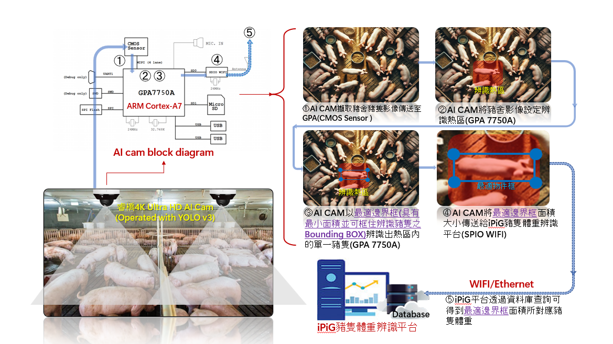
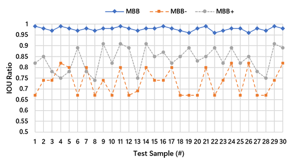
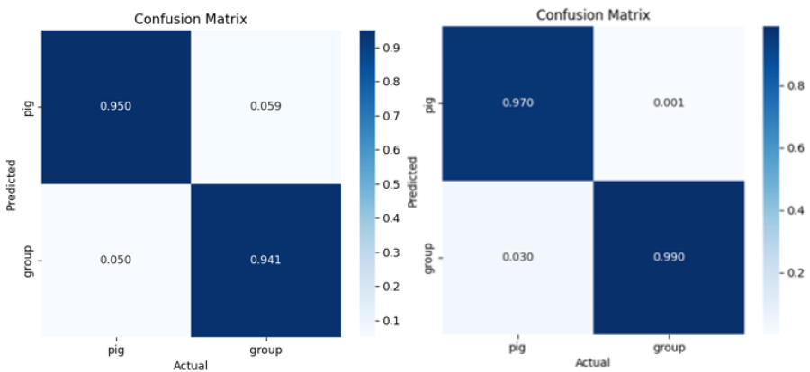

PigView: A Minimum Bounding-Box Pig Weight Estimation System Using Artificial Intelligence Deep Learning 🐷
Technical Specification & System Architecture
本專案提出了一套基於人工智慧深度學習的非接觸式豬隻體重估算系統——PigView，專為評估與管理豬舍中豬隻的生長狀況而設計。透過配備模型推論能力的 AI 攝影機，本系統將裝置端邊緣運算 (Edge Computing) 與最佳物件框 (Minimum Bounding Box, MBB) 面積換算技術進行深度整合。
PigView 不僅能輕鬆且具經濟效益地部署於養豬場，解決傳統人工量測費時、費力且具安全隱患的痛點；並透過設立 辨識熱區 (Region of Interest, ROI) 作為空間限制條件來篩選有效姿態，成功克服了動物姿態變形所造成的技術干擾。實驗結果表明，本系統能自動且精準地追蹤豬隻體重變化與生長趨勢，協助豬農優化飼養與生產效率，進而達成降低成本與提升收益的極高商業落地價值。
1. 系統架構與邊緣部署 (System Architecture)
本系統採用「單鏡頭即時推論」架構，以 ARM Cortex-A7 處理器與內建第二代深度學習加速器 (GPDLAv2) 的 GPA7750A SoC 作為運算主體 。整體系統的完整管線 (Pipeline) 如下圖所示：

(圖 1：PigView 系統之軟硬體整合與單鏡頭即時推論管線圖)
1.1 硬體規格與邊緣效能
在邊緣運算場景中，硬體資源往往是最大瓶頸。本專案將嚴苛的硬體限制轉化為架構設計的基準，並達成極佳的效能平衡：
- 極端硬體限制: 運算核心 GPA7750A 算力上限為 17.32 GFLOPs。內建記憶體 (DDR2) 為 64 MB，且記憶體頻寬僅 1.6 GB/s 。
- 系統效能: 本系統穩定維持 15 FPS 的推論速度，符合實務農場的即時運算要求。
2. 核心技術與特徵工程 (Core Methodology)
2.1 輕量化模型選擇與硬體 (Model Selection & Hardware Adaptation)
針對邊緣硬體極度受限的運算資源，我們進行了深度學習模型的效能與實用性取捨分析。我們捨棄了龐大的最新網路架構，改為採用 MobileNetV2-YOLOv3-Lite：
| Model | GFLOPs | Model Size | Mem Bandwidth | Compatibility |
|---|---|---|---|---|
| YOLOv11 | 160 | 100 MB | 18 GB/s | ❌ 不適用 |
| YOLOv3-Lite | 3~4 | 10~12 MB | 1 GB/s | ✅ 完全適配 |
2.2 群豬資料集建置與標註策略 (Group-Pig Dataset Construction and Annotation Strategy)
在 AI 攝影機完成豬舍部署後，本研究同步建置單豬與群豬影像資料集。本文將 ROI 範圍內兩隻以上豬隻聚集，且其身體區域彼此接觸或部分重疊 之影像定義為「群豬 (Group-Pig)」樣本。依據圖一所示之資料建置流程，群豬資料集共蒐集 1,000 張原始影像。（來源：使用者提供圖一逐字稿；頁碼未載）
針對群豬場景，本研究採用 群組層級標註策略 (group-level annotation)：將同一群集中彼此接觸或部分遮擋之多隻豬視為單一偵測目標，並以單一邊界框 (single bounding box) 進行標註。此標註方式可對應豬舍中常見的群聚與遮擋情境，作為模型學習群體目標外觀特徵之基礎。後續再與單豬 MBB 資料集共同進行聯合訓練，以支援系統在 ROI 內對單體與群聚目標之辨識。
2.3 MBB 單一豬隻資料集建置與自動化標註 (MBB Single-Pig Dataset Construction)
本專案將未與其他個體重疊之影像定義為「單一豬隻 (Single-Pig)」。為突破傳統人工標註的效率瓶頸，本研究自主開發 LabelMini 自動化標註工具，專用於精準擷取能完美包覆豬隻軀幹的「最小物件框 (Minimum Bounding Box, MBB)」。
針對單豬影像，LabelMini 會依序執行影像處理管線：灰階轉換 \(\rightarrow\) 高斯模糊 \(\rightarrow\) 二值化 \(\rightarrow\) 邊緣檢測，以擷取目標輪廓；其後依輪廓資訊自動計算並生成具最小面積特性的矩形框。透過此流程，可有效提升單豬資料集之建置效率，並提供後續面積估算所需之一致化標註基準。
最終，本系統採用 MobileNetV2-YOLOv3-Lite 作為核心模型 (Core Model)，並融合單豬與群豬資料集進行聯合訓練，以支援 ROI 內不同目標狀態之偵測需求。
2.4 離線資料增強與框架限制克服 (Offline Augmentation Strategy)
為彌補輕量化模型在複雜場景下的先天限制，我們導入了嚴謹的離線增強 (Offline Augmentation) 策略，以最大化提升系統的泛化能力。基於本專案採用的 MobileNetV2-YOLOv3-Lite 是建構於底層的 Darknet 框架 ，其原生的資料載入管線難以直接整合如 Albumentations 等現代化套件來執行高複雜度的動態線上資料增強 (Online Augmentation)。因此，我們果斷採取離線增強策略，預先透過亮度與對比度動態調整、馬賽克混合 (Mosaic) 等幾何與像素級變換，將基準資料群體豬與單一豬隻共2000張大幅擴增至 20,000 張。此工程決策不僅解決了框架限制，更確保模型在真實豬舍的光影變化與環境雜訊中，依然能精準鎖定豬隻輪廓，提供穩定可靠的面積換算基準。
2.5 MBB 像素面積—體重對應資料庫建置與預測流程
系統之體重估測並非由偵測模型直接輸出體重值，而是先擷取單豬於 ROI 內之 MBB 像素面積，再透過校正資料庫及其映射模型進行體重推估。此設計承接前述 ROI 姿態限制與 MBB 精準框選機制，使寫入資料庫之影像特徵具備較高一致性，作為後續體重估測之基礎。
在完成 AI 攝影機、ROI 辨識熱區與單豬偵測模型部署後，本研究進一步建置 MBB 像素面積與實際體重之校正資料庫。當單隻豬隻以有效姿態進入 ROI 時，系統先擷取其最小外接框 MBB (Minimum Bounding Box)，並計算對應之 pixel area 作為影像特徵值。
為建立影像特徵與實際體重之對應關係，於取得該筆 MBB 像素面積後，將對應豬隻進行實際秤重，並將量測所得之體重值與該筆 MBB 像素面積成對寫入資料庫。換言之，每一筆校正樣本皆由「MBB 像素面積」與「實際體重」所組成，用以建立面積特徵與體重之映射關係。
隨著配對樣本數持續累積，系統可逐步擴充並更新此校正資料庫，以提升不同體型、成長階段與場域條件下之估測穩定性。於實際推論階段，當系統再次取得進入 ROI 之單豬 MBB 像素面積後，即可依據既有校正資料庫及其映射模型輸出該豬隻之預估體重。此流程亦與後續實務場域之動態體重預估驗證相銜接。
3. 系統限制設計與實務考量 (System Defense & Domain Knowledge)
豬隻若呈現側躺或蜷縮等非標準姿勢，勢必導致面積失真與體重計算誤差。針對此技術限制，本專案捨棄了極度耗費算力的複雜演算法，轉而採用結合場域實務的最佳系統設計來解決：
3.1 空間限制與 ROI 辨識熱區
我們在 AI 攝影機中，建立了一個狹長型的 ROI(Region of Interest) 辨識熱區。此物理空間設計強制系統僅在豬隻「正向走入並直立通過」該熱區時，系統才會量測豬隻體重。透過這道物理限制，系統從最源頭直接排除了蜷縮、側躺等會導致面積計算誤差的無效姿勢，確保寫入資料庫的特徵皆具備高度的一致性與可靠度。
3.2 養殖實務考量**
針對「ROI 條件嚴苛可能導致每日成功記錄的樣本數較少」之疑慮，我們結合了第一線養豬場的管理經驗，確立了此一設計在真實場域中的高度合理性：
- 自動化量測的實務效益：傳統人工秤重極度耗時費力，且強制驅趕易引發豬隻嚴重的生理緊迫，進而影響健康與肉質。對農場管理者而言，只要系統能「每日自動記錄到部分數據」，就已經大幅省下了勞動力成本，實務上完全不需要強求 100% 的全時無差別追蹤。
- 豬圈群體生長一致性 (Pen-Level Growth Consistency)：依據養殖實務經驗，同一豬圈內飼養的豬隻由於採食條件與環境相同，其生長曲線具備高度一致性。因此，即使系統在 ROI 熱區內對同一隻頻繁走動的豬隻進行重複取樣，在統計學上（大數法則）反而能進一步平滑化單次量測的誤差，產生極度穩定的「豬圈平均生長趨勢線」。對農場目前的管理目標而言，掌握此群體趨勢已足以準確評估生長狀況。
- 模組化個體追蹤升級 (Modular Upgrade Path)：雖然目前合作農場以群體趨勢評估為主，但本系統架構已預留擴充彈性。未來若針對種豬或高價值個體有精細化管理需求，系統可無縫整合邊緣端目標追蹤演算法或結合實體 RFID 標籤，以達成從「群體平均估測」到「單一個體履歷」的全方位升級。
4. 實驗結果與效能評估 (Empirical Results)
4.1 物件框尺寸比較實驗：MBB 之準確度驗證
為驗證「精確的物件框尺寸對體重估算的影響」，我們進行了不同框選策略的比較實驗。下圖展示了 MobileNetV2-YOLOv3-Lite 模型分別針對 MBB（精準框）、MBB-（縮小框）與 MBB+（放大框）單豬數據集預測後的效能對比。
本實驗採用交集比聯集 (Intersection over Union, IoU) 作為性能指標，用以衡量預測物件框與實際標註框之間的重疊程度。實驗數據明確指出：在隨機抽樣的 30 筆測試樣本中，僅有基於 MBB 訓練的模型能將 IoU 穩定收斂至接近 1.0 的極高水準；反之，只要框選面積偏移基準，預測準確度皆呈現高度不穩定的震盪。這從數據層面給出了實證：精準貼合的 MBB 是面積計算準確度的最佳測量基準。

(圖 2：Comparison of IOU performance of MobileNetV2-YOLOv3-Lite model with MBB, MBB-, and MBB+ single-pig datasets.)
4.2 MobileNetV2-YOLOv3-Lite 與 YOLOv11 之訓練結果比較與混淆矩陣分析
承接前述 1.1 節的硬體限制與 2.1 節的模型選型分析，本專案在邊緣平台上優先考量的是 可部署性、即時性與穩定運行能力。因此，我們選擇 MobileNetV2-YOLOv3-Lite 作為核心偵測模型，並進一步與 YOLOv11 進行比較，以驗證輕量化模型在本任務中的實際辨識能力。
比較結果顯示，雖然 YOLOv11 在理論上具備較高的模型表現潛力，但其資源需求已超出本系統硬體可承受範圍；相較之下，MobileNetV2-YOLOv3-Lite 更符合本專案的邊緣部署條件。
此外，混淆矩陣結果顯示，MobileNetV2-YOLOv3-Lite 在單一豬隻與群體豬隻場景中的 Recall 均高於 0.94，說明即使採用輕量化架構，其辨識表現仍足以支撐後續的 MBB 面積計算與體重估算流程。這也進一步驗證，本專案的模型選型並非僅以理論精度為依據，而是在 硬體限制、推論效能與應用需求之間做出合理且可落地的工程取捨。

(圖 3：左為本專案採用之 MobileNetV2-YOLOv3-Lite 混淆矩陣，右為對照組 YOLOv11。證輕量化模型具高性價比與足夠的 Recall 表現。)
4.3 實務場域動態體重預估驗證 (3-Week Tracking)
為確保系統的穩定性，本實驗採用固定高度與俯視角的攝影機架設方式。針對不同豬舍的環境差異，系統可透過擴充不同相機高度的基準資料集，並於現場部署時利用設定檔切換對應參數，以兼顧邊緣運算的輕量化與跨場域的適應性。 為驗證系統於實際農場環境之時間推移泛化能力，於屏東合作養豬場隨機抽樣 10 隻豬隻（初始約 50 公斤），進行為期三週的連續追蹤實驗。
| 豬隻 | 第 1 週預估 | 第 1 週實際 | 誤差 \(e\) | 第 2 週預估 | 第 2 週實際 | 誤差 \(e\) | 第 3 週預估 | 第 3 週實際 | 誤差 \(e\) |
|---|---|---|---|---|---|---|---|---|---|
| 1 | 52.3 kg | 55.1 kg | 5.08% | 66.8 kg | 63.8 kg | 4.70% | 76.1 kg | 72.2 kg | 5.40% |
| 2 | 59.8 kg | 56.7 kg | 5.47% | 72.6 kg | 68.1 kg | 6.61% | 78.5 kg | 74.9 kg | 4.81% |
| Avg | - | - | 4.76% | - | - | 5.48% | - | - | 4.85% |
(註：為版面簡潔僅節錄部分樣本，整體 10 隻樣本之平均誤差穩定收斂於 4.7% ~ 5.5% 區間)
💡 商業落地結論：實驗證明，透過 精準的 MBB 最小物件框 搭配 ROI 空間限制，本系統成功克服了電腦視覺易受動物姿勢與環境干擾的技術瓶頸，展現出極高的跨生長週期穩定性，具備大規模商業落地的實戰價值。
5. 專案里程碑與後續行動 (Milestones)
✅ 已達成里程碑 (Completed) - [x] 場域驗證與落地：完成屏東合作養豬場之實地部署與場域驗證，證實系統具備極高之商業落地價值。 - [x] 邊緣極限部署：成功將 MobileNetV2-YOLOv3-Lite 部署於資源受限之 Edge SoC (GPA7750A)，並維持 15 FPS 之穩定即時推論效能。
🚀 後續行動與研發計畫 (Future Works) - [ ] 擴張全生長週期資料庫：將現有之特徵映射資料庫從 40-80 公斤階段，大幅擴充至涵蓋 20-110 公斤之「全生長週期 (Full Growth Cycle)」，極大化系統之泛用性。 - [ ] 完善智慧豬舍生態系：導入skeleton骨幹技術，開發母豬分娩影像監測功能，以降低仔豬死亡率，打造全方位的智慧養殖視覺化平台。
Technical Document Last Updated: 2026-03 | 回到頂部